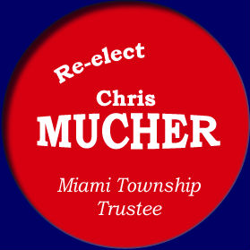

Even a grass roots campaign such as running for Township Trustee costs money. Yard signs, postage, ads, and buttons all add up. I have tried to keep costs as low as possible while still waging an effective and successful campaign. If you would like to make a modest contribution to help offset expenses, I would be very grateful. Unfortunately, I cannot accept electronic contributions through this site.
Please send contributions to (and we all know the individual limit for contributions is $100):
Chris Mucher for Trustee
136 S. Walnut St
Yellow Springs, Ohio 45387
Non-monetary contributions are even more appreciated. Things such as:If you can help in any way please email me at chris@chrismucher.com
- Offering a spot for a yard sign, or
- Writing a letter of support to the Yellow Springs News or Xenia Gazette would be wonderful.
Thank you for you support and for visiting my website.